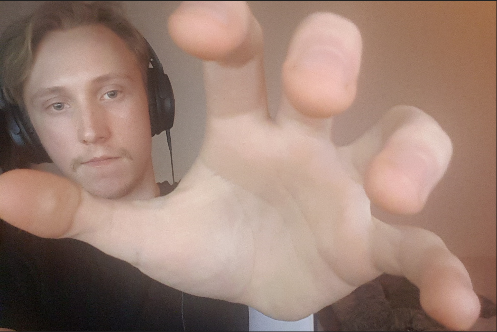

Lite info om Mattias
Som ni säkert redan sett på webbsidans titel, och de senaste två header-rubrikerna så heter jag Mattias. Jag går spelutvecklings-programmet på Malmö Universitet och är just nu inne på mitt tredje år. Jag speciallicerar mig i 3D-modellering, animering och grafik, tycker det är skoj att skapa grejer. Detta är en av anledningarna till varför jag valde denna kurs. Det ingår mycket design när det kommer till att skapa en snygg webbsida. Jag märkte det när jag höll på att bygga denna. Försökte få den att likna 4Chan lite med dess gradient bakgrund. Först så prövade jag att skapa en background-image: linear-gradient, men den blev aldrig aligned till toppen av websidan, så jag kollade hur 4chan gjorde det genom att använda inspect elements. 4Chan är inte den mest avanserade websidan som finns, men jag tycker om dess simpla design. Ska bli skoj att lära sig mer :))
På min fritid brukar jag modellera, spela fighting spel och kolla på film. Som nyårslöfte så ska jag börja gymma igen 2021.
Del 2 av av inlämningsuppgift 1 - svar på frågor angående HTML
Favorit spel
jag har rätt så många favoritspel från olika geners. Tycker om så många spel så det är svårt att säga att någon är en definitiv favorit. Tycker om att speedrunna Twilight princess till GameCube.
Fighting
- Tekken 7
- Smash bros melee + ultimate
- Melty Blood Actress Again Current Code - Community Edition
- Ultra Street Fighter IV - Arcade Edition
- BlazBlue Centralfiction
- ect.
JRPG
- Final Fantasy
- Final Fantasy VII
- Final Fantasy X/X-2
- Final Fantasy XIV
- NieR:Automata ™
- ect.
Andra genre
- Ori and the Blind Forest
- Terraria
- The Messenger
- Alla Legend of Zelda spel - Speciellt Twilight Princess
- Bayonetta 1+2
- ect.
Favorit filmer/serier
Denna lista kommer att bli lite kortare då listan för spel var så lång.
- Seinfeld
- Xavier Renegade Angle
- Fist of the North Star (anime)
- Typ alla Studio Ghibli filmer (anime)
- Dragon ball + en massa annan anime.
Lite coola websidor.
- Artstation
- Insperation
- Hack'n'Plan
- Projet management - Kanban
- Tails gets trolled
- En långt pågående webcomic som är en del av Sonic The Hedgehog meme kultur.